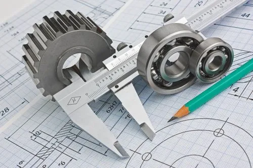
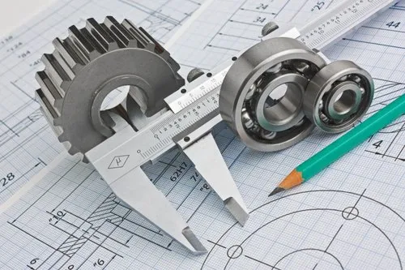

Welcome to the Brahmanbaria Polytechnic Institute (BPI) Campus . Brahmanbaria Polytechnic Institute has a unique position among the Polytechnic Institutes, because of its “Politics& Smoking free campus” and modern education system.Commencing the academic programme in the year of 2005 , Brahmanbaria Polytechnic Institute has now developed into a centre of excellence in the arena of Diploma Engineering education. Brahmanbaria polytechnic Institute aims to produce technically sound professional as well as capable of thinking in a comprehensive way. We have a strong professional orientation with a focus on academic excellence and students employability. We hope, our website will give you a flavour of what makes our polytechnic Institute special, in terms of our academic experience and official correspondence, whether you are a student, employer, colleague or well wisher.
The Institute has a highly qualified teaching faculty that provides instruction to students in the fields of science and technology. We offer programs and services which are driven by the need of our community and economy.The mission and vision of Brahmanbaria Polytechnic Institute is to produce skilled manpower and marketable workforce for both home and abroad with the most up-to-date and modern techniques.
I am very happy to mention that our students admission programme has been running through internet since session 2010-2011. Our correspondence with Directorate of Technical Education is through internet (E-mail, Website). Our ICR form fill up, students electronic form fill up (EFF), Registration etc are submitted through on line. It is my pleasure to welcome you to Brahmanbaria Polytechnic Institute and invite you to be a member of the community that strives for excellence in all academic activities.
Write to Jobayer Bin Abdullah


 

Brahmanbaria Politecnic Institute of the courtyard